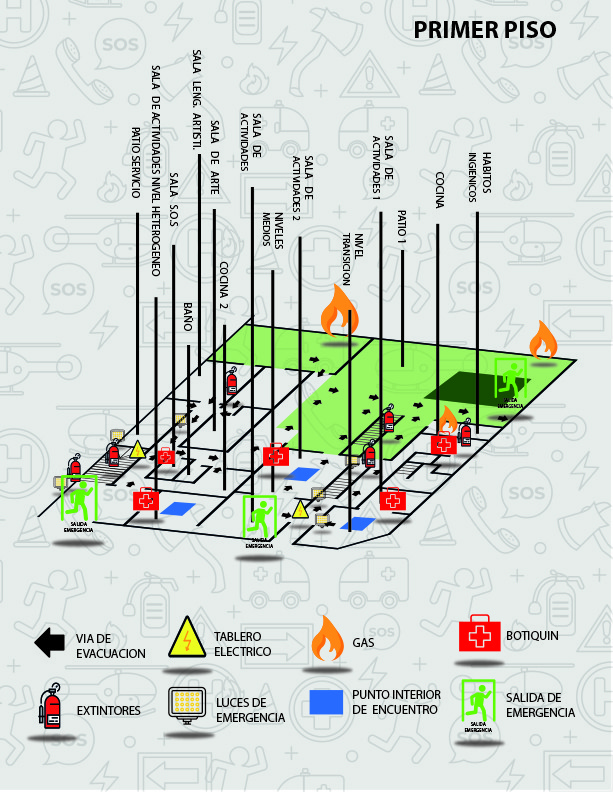
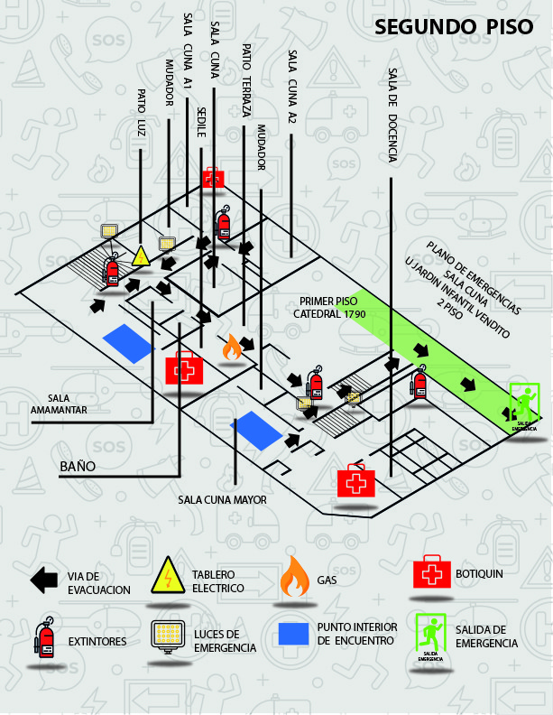

Sala cuna y jardín infantil en Santiago, con cámaras en vivo para que las familias vean el jardín en cualquier momento.
Consultar por valoresSi deseas consultar por los valores de ingreso para tus hijos, puedes ir personalmente a nuestras dependencias. Con gusto te atendemos y te mostramos el establecimiento.
Cada nivel tiene su plano de evacuación a la vista.

